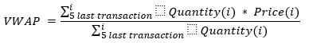

(internal: the HTML file is generated from the src/markdown/README.md using gradlew markdownToHtml)
You need an internet connection to download the dependencies of this project.
And a JDK installed. Any recent JDK should be good as this project has been tested using Java 8, Java 11 and Java 17.
This practice is a Gradle Java project.
Recent IDEs, like Eclipse or IntelliJ IDEA, are able to open the build.gradle file as a project file and achieve all the required setup.
In this documentation when gradlew is used it means gradlew.bat for Windows and ./gradlew for Unix-like OS.
As it will be explained below
com.hsoft.practice.VwapTrigger class.The goal of this test is to compare data coming from a provider and react to given conditions.
The provider notifies two types of data:
Starting in the com.hsoft.practice.VwapTrigger class you will receive Pricing Data through the fairValueChanged method.
Example:
Still in the com.hsoft.practice.VwapTrigger class you will receive Market Data through the transactionOccurred method. Using these Market Data we ask you to compute the Volume Weighted Average Price (VWAP) over the five last transactions received for each product. If less than five transactions were reported on a given product, the VWAP will be calculated using all the transactions available for this product.
VWAP formula to implement is: 
Example:
Each time a new transaction occurs, or a new fair value is provided, compare the latest VWAP with the latest Fair Value. If the VWAP is greater than the Fair Value, then trigger an event to the vwapTriggerListener using its vwapTriggered(...); method. See com.hsoft.practice.VwapTrigger.
You can add your code in the current methods of com.hsoft.practice.VwapTrigger and/or you can create new methods, new classes, new interfaces, new dependencies etc. to achieve your solution.
To validate your solution you must execute gradlew test. It will execute two unit tests asserting events (the ones that you will trigger when comparing the latest VWAP with the latest Fair Value), and will ensure that the Fair Price and VWAP are the expected one for some products.
ExpectationTest.singleThreaded: the same thread will be used to notify all Pricing Data and Market Data. This test is mandatory.ExpectationTest.multiThreaded: several threads will be used to notify Pricing Data and Market Data. It means that you can receive Pricing Data for different products at the "same time". Or receive Pricing Data while receiving Market Data (and vice-versa). This test is optional if you are not comfortable with multi-threading. But even if you are not comfortable with multi-threading it will be good to try. We will then debrief it and discuss the difficulties.In addition of these provided tests you can add your own tests in the com.hsoft.practice.VwapTriggerTest, and/or in another XxxxTest class. They will also be executed by gradlew test
A tests report will be available, and should be located under build/reports/tests/test/index.html. You can also run the tests in your IDE.
com.hsoft.internal package. Candidate must not modify them and doesn't need to check/understand them to achieve this practice. Actually an obfuscation has been achieved on these classes to show that they are not important to resolve the practice. They must be seen as a black-box library.